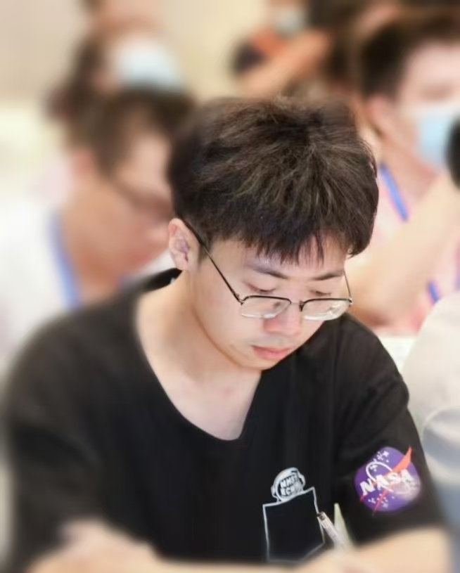
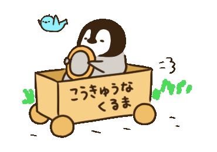

Hi, I am Hongbo Wang
M.Eng. at Dalian University of Technology (DUTIR Lab)
Incoming Ph.D. Student at University of Tokyo (Echizen Lab)
Researching Multimodal Toxicity Detection, LLM, and Responsible AI
Research Motivation
Since 2022, I have been dedicated to researching various forms of toxic speech, including hate speech, offensive language, and patronizing and condescending language (PCL). This line of research includes the construction of a PCL dataset (NLPCC’23), an LLM-based PCL detector (EMNLP’24), and the multimodal PCL detection (ICASSP’25).
My research is driven by the goal of protecting vulnerable groups from toxic online discourse and investigating novel cybersecurity paradigms in the context of LLMs/MLLMs.
Education
- Ph.D. in Information and Communication Engineering, University of Tokyo, 2025 -
- M.Eng. in Computer Science and Technology, Dalian University of Technology, 2022 - 2025
- B.Eng. in Computer Science and Technology, Dalian University of Technology, 2017 - 2022
Publications
CCPC: A Hierarchical Chinese Corpus for Patronizing and Condescending Language Detection
NLPCC 2023
Hongbo Wang, Mingda Li, Junyu Lu, Liang Yang, Hebin Xia, Hongfei Lin
[PDF] [Code]PclGPT: A Large Language Model for Patronizing and Condescending Language Detection
EMNLP 2024 (Findings)
Hongbo Wang, Mingda Li, Junyu Lu, Hebin Xia, Liang Yang, Bo Xu, Ruizhu Liu, Hongfei Lin
[PDF] [Code]Towards Patronizing and Condescending Language in Chinese Videos: A Multimodal Dataset and Detector
ICASSP 2025
Hongbo Wang, Junyu Lu, Yan Han, Kai Ma, Liang Yang, Hongfei Lin
[PDF] [Code]Guts at SemEval-2022 Task 4: Adversarial Training and Balancing Methods for Patronizing and Condescending Language Detection
SemEval-2022
Junyu Lu, Hao Zhang, Tongyue Zhang, Hongbo Wang, Haohao Zhu, Bo Xu, Hongfei Lin
[PDF]Towards Comprehensive Detection of Chinese Harmful Memes
NeurIPS 2024
Junyu Lu, Bo Xu, Xiaokun Zhang, Hongbo Wang, Haohao Zhu, Dongyu Zhang, Liang Yang, Hongfei Lin
[PDF] [Code]
Skills
- Python
- Deep Learning
- Linguistic Analysis
Contact
📧 dutlaowang@mail.dlut.edu.cn
Google Scholar | GitHub | Xiaohongshu
